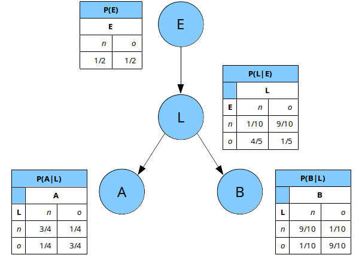

Inférence probabiliste
Table des matières
Questions de cours
Soit \(\phi\) un potentiel défini sur les variables \(X\) et \(Y\) à valeurs respectivement dans les ensembles \(\mathcal{X}\) et \(\mathcal{Y}\). \(\phi\) est caractérisé par les valeurs suivantes :
| \(X\) | \(x_{1}\) | \(x_{2}\) | \(x_{1}\) | \(x_{2}\) | \(x_{1}\) | \(x_{2}\) |
|---|---|---|---|---|---|---|
| \(Y\) | \(y_{1}\) | \(y_{1}\) | \(y_{2}\) | \(y_{2}\) | \(y_{3}\) | \(y_{3}\) |
| \(\phi(X,Y)\) | \(3/5\) | \(1/4\) | \(1/5\) | \(1/2\) | \(1/5\) | \(1/4\) |
- Préciser les domaines \(\mathcal{X}\) et \(\mathcal{Y}\).
- Donner la complexité spatiale de \(\phi\).
- Donner le résultat de l'instanciation de \(\phi\) sur \(x_{1}\).
- Donner le résultat de l'instanciation de \(\phi\) sur \(x_{2}\).
- Calculer \(\psi = \sum_{X} \phi\).
- Calculer \(\omega = \psi \cdot \phi\).
- Le potentiel \(\phi\) est-il également une loi de probabilité conditionnelle ? Si oui donner son expression.
Correction
- \(\mathcal{X} = \{x_{1},x_{2}\}\) et \(\mathcal{Y} = \{y_{1},y_{2},y_{3}\}\).
- \(\text{Dom}(\phi) = \{\mathcal{X},\mathcal{Y}\}\), donc \(\text{Dom}(\phi)^{*} = \mathcal{X} \times \mathcal{Y} = \{x_{1},x_{2}\} \times \{y_{1},y_{2},y_{3}\}\), et définition, \(CS(\phi) = |\text{Dom}(\phi)^{*}| = |\mathcal{X}| \times |\mathcal{Y}| = 2 \times 3 = 6\).
\(\phi(x_{1},Y) =\)
\(X\) \(x_{1}\) \(x_{1}\) \(x_{1}\) \(Y\) \(y_{1}\) \(y_{2}\) \(y_{3}\) \(\phi(x_{1},Y)\) \(3/5\) \(1/5\) \(1/5\) \(\phi(x_{2},Y) =\)
\(X\) \(x_{2}\) \(x_{2}\) \(x_{2}\) \(Y\) \(y_{1}\) \(y_{2}\) \(y_{3}\) \(\phi(X,Y)\) \(1/4\) \(1/2\) \(1/4\) Par définition, on sait que \(\text{Dom}(\psi) = \text{Dom}(\sum_{X} \phi) = \text{Dom}(\phi)\setminus \{\mathcal{X}\} = \{\mathcal{Y}\}\). Le potentiel \(\psi\) est défini par :
\(Y\) \(y_{1}\) \(y_{2}\) \(y_{3}\) \(\psi(Y)\) \(\phi(x_{1},y{1}) + \phi(x_{2},y{1}) = 3/5 + 1/4 = 17/20\) \(1/5 + 1/2 = 7/10\) \(1/5 + 1/4 = 9/20\) Par définition, on sait que \(\text{Dom}(\omega) = \text{Dom}(\psi \cdot \phi) = \text{Dom}(\psi) \cup \text{Dom}(\phi) = \{\mathcal{Y}\} \cup \{\mathcal{X}, \mathcal{Y}\} = \{\mathcal{X}, \mathcal{Y}\}\). Le potentiel \(\omega\) est défini par :
\(X\) \(x_{1}\) \(x_{2}\) \(x_{1}\) \(x_{2}\) \(x_{1}\) \(x_{2}\) \(Y\) \(y_{1}\) \(y_{1}\) \(y_{2}\) \(y_{2}\) \(y_{3}\) \(y_{3}\) \(\omega(X,Y)\) \(\psi(y_{1}) \times \phi(x_{1},y_{1}) = 17/20 \times 3/5\) \(\psi(y_{1}) \times \phi(x_{2},y_{1}) = 17/20 \times 1/4\) \(\psi(y_{2}) \times \phi(x_{1},y_{2}) = 7/10 \times 1/5\) \(\psi(y_{2}) \times \phi(x_{2},y_{2}) = 7/10 \times 1/2\) \(\psi(y_{3}) \times \phi(x_{1},y_{3}) = 9/20 \times 1/5\) \(\psi(y_{3}) \times \phi(x_{2},y_{3}) = 9/20 \times 1/4\) - Tout d'abord, on vérifie que pour tous \(x \in \mathcal{X}\) et \(y \in \mathcal{Y}\), \(\phi(x,y) \in
[0,1]\). Ensuite, il faut trouver l'existence d'un sous ensemble de dimensions du domaine de
\(\phi\) vérifiant la propriété de sommation à 1. \(\phi\) étant de dimension 2, il y a trois
sous ensembles de dimension possibles :
- domaine normalisé : \(\{\mathcal{X},\mathcal{Y}\}\) ; domaine de conditionnement : \(\varnothing\) \(\implies \sum_{(x,y) \in \{\mathcal{X},\mathcal{Y}\}^{*}} \phi(x,y) = 2 \neq 1\);
- domaine normalisé : \(\{\mathcal{X}\}\) ; domaine de conditionnement : \(\{\mathcal{Y}\}\) ; \(\implies \sum_{x \in \mathcal{X}} \phi(x,y_{1}) = 3/5 + 1/4 = 17/20 \neq 1\), inutile de vérifier la sommation pour \(y = y_{2}\) et \(y = y_{3}\)
- domaine normalisé : \(\{\mathcal{Y}\}\) ; domaine de conditionnement : \(\{\mathcal{X}\}\) \(\implies \sum_{y \in \mathcal{Y}} \phi(x_{1},y) = \sum_{y \in \mathcal{Y}} \phi(x_{2},y) = 1\). Le potentiel \(\phi\) est donc une loi de probabilité sur le domaine \(\mathcal{Y}\) conditionnellement au domaine \(\mathcal{X}\).
Exercice 1
L'objectif est d'appliquer l'algorithme d'élimination des variables sur le RB présenté en Figure 1.

Figure 1 : Modèle RB de l'exercice 1 sur l'inférence probabiliste.
Appliquer la méthode d'élimination pour calculer :
- \(P(A)\);
- \(P(L|B = n)\);
- \(P(A,B|L = o)\).
Dans chaque cas, essayer de trouver un ordre d'élimination limitant au maximum la taille des potentiels intermédiaires.
Correction
Commençons par écrire la factorisation de la loi jointe des variables \(E\), \(L\), \(A\) et \(B\) dans le RB de la Figure 1 :
\begin{equation*} P(E,L,A,B) = P(E) \times P(L|E) \times P(A|L) \times P(B|L). \end{equation*}Calcul de \(P(A)\)
Par définition, \(P(A)\) est donnée par :
\begin{equation*} P(A) = \sum_{E,L,B} P(E,L,A,B) = \sum_{E} \sum_{L} \sum_{B} P(E) \times P(L|E) \times P(A|L) \times P(B|L). \end{equation*}En distribuant astucieusement les sommes, on obtient :
\begin{equation*} P(A) = \sum_{L} P(A|L) \sum_{E} P(L|E) \times P(E) \times \underbrace{\sum_{B} P(B|L)}_{= [1, \ldots, 1]}. \end{equation*}La variable \(B\) a donc été éliminée. Passons à l'élimination de la variable E :
\begin{equation*} P(A) = \sum_{L} P(A|L) \underbrace{\sum_{E} \underbrace{P(L|E) \times P(E)}_{\phi_{E}(L,E) = P(L,E)}}_{\psi_{E}(L) = P(L)} \end{equation*}Terminons le processus en éliminant la varialbe L :
\begin{equation*} P(A) = \underbrace{\sum_{L} \underbrace{P(A|L) \times \psi_{E}(L)}_{\phi_{L}(A,L)}}_{\psi_{L}(A)} \end{equation*}Calcul de \(P(L|B=n)\)
Par définition, \(P(L|B = n)\) est donnée par :
\begin{equation*} P(L|B = n) = \frac{P(L,B = n)}{P(B = n)}. \end{equation*}Il faut donc calculer dans un premier temps, la loi \(P(L,B)\) définie par :
\begin{align*} P(L, B = n) & = \sum_{A,E} P(E,L,A,B = n) \\ & = \sum_{A} \sum_{E} P(E) \times P(L|E) \times P(A|L) \times P(B = n|L). \end{align*}Nous proposons la distribution suivante des sommations qui permet d'éliminer la variable \(A\) directement :
\begin{equation*} P(L, B = n) = P(B = n|L) \sum_{E} P(E) \times P(L|E) \times \underbrace{\sum_{A} P(A|L)}_{= [1, \ldots, 1]}. \end{equation*}Éliminons à présent la variable \(E\) :
\begin{equation*} P(L, B = n) = P(B = n|L) \underbrace{\sum_{E} \underbrace{P(E) \times P(L|E)}_{\phi_{E}(L,E) = P(L,E)}}_{\psi_{E}(L) = P(L)}. \end{equation*}On obtient au final :
\begin{equation*} P(L, B = n) = P(B = n|L) \times \psi_{E}(L). \end{equation*}La loi \(P(L|B=n)\) s'obtient par simple normalisation sur \(L\) ou en effectuant explicitement le calcul suivant :
\begin{equation*} P(L | B = n) = \frac{P(L, B = n)}{\sum_{L} P(L, B = n)}. \end{equation*}Calcul de \(P(A,B|L = o)\)
Par définition, \(P(A, B|L = o)\) est donnée par :
\begin{equation*} P(A, B|L = o) = \frac{P(A,B, L = o)}{P(L = o)}. \end{equation*}Il faut donc calculer dans un premier temps, la loi \(P(A,B,L=o)\) définie par :
\begin{align*} P(A,B, L = o) & = \sum_{E} P(E,L = o,A,B) \\ & = \sum_{E} P(E) \times P(L=o|E) \times P(A|L=o) \times P(B|L=o). \end{align*}Seule la variable E est à éliminer comme suit : directement :
\begin{equation*} P(A,B, L = o) = P(A|L=o) \times P(B|L=o) \times \underbrace{\sum_{E} \underbrace{P(E) \times P(L=o|E)}_{\phi_{E}(L=o,E) = P(L=o,E)}}_{\psi_{E}(L=o) = P(L=o)}. \end{equation*}Il vient alors :
\begin{equation*} P(A,B, L = o) = P(A|L=o) \times P(B|L=o) \times \psi_{E}(L=o). \end{equation*}La loi \(P(A,B| L = o)\) s'obtient par simple normalisation sur les variables \((A,B)\) ou en effectuant explicitement le calcul suivant :
\begin{equation*} P(A,B| L = o) = \frac{P(A,B, L = o)}{\sum_{A,B} P(A,B,L=o)}. \end{equation*}Calculs numériques
Les calculs numériques sont réalisés sous Python avec librairie pyAgrum dans le script
téléchargeable ici.